El video de intro se carga solo cuando exista presentation/renders/forja-intro.mp4 (recarga la página).
02 / 11
FORJA NL
El problema
1.46 Mjóvenes de 15 a 29 años viven en Nuevo León
El talento está. El acceso, no.
La IA se cobra en dólares,
por cada token,
y con tarjeta de crédito.
Fuente: INEGI, Censo de Población y Vivienda 2020 (vía DataMéxico): 1,464,071 personas de 15 a 29 años en NL. Precios de API por millón de tokens en USD: docs.x.ai, 14/10/2026.
03 / 11
FORJA NL
Lo que ya existe
Hay apoyos para jóvenes. Ninguno da tokens de IA.
Crédito
Impulso NL10,896 MDP a 4,383 mipymes · desde 21 años
Microcrédito Monterreyhasta $70,000 al 0% · desde 21 años
Becas y cursos
Santander · INJUVE5,000 becas (meta)
Generation México600 becas · 15 MDP
Hola IAmeta: 10,000 personas
Fondos y premios
FONLIN 2026I2T2 · cerró en junio
InnovaFest17 MDP en premios, nacional
Fondo de FondosNafin · solo vía fondos VC
Tokens de IA
0programas dan tokens a estudiantesEse es el hueco que llena Forja NL.
Fuente: research/mapa-programas-emprendimiento-tecnologia-jovenes-nl.md (boletines nl.gob.mx, I2T2, INJUVE, Nafin; corte 14/10/2026). Cifras reportadas por cada operador, sin auditar; las metas no son resultados.
04 / 11
FORJA NL
¿Y los laboratorios de IA?
Sus créditos no llegan a un estudiante.
IntransferiblesCada empresa los pide a su nombre y no puede pasarlos.
Sin empresa, no calificasNingún programa revisado acepta alumnos sin empresa.
Gobierno, excluidoGoogle y AWS no dan créditos a entidades de gobierno.
Grok: caso por casoSin monto publicado; los créditos vencen a los 6 meses.
El fondo lo financia Nuevo León; los créditos de laboratorios son complemento.
Fuentes: términos de Google Cloud for Startups, AWS Activate, Microsoft for Startups, Claude for Startups, OpenAI y Grok for Startups (x.ai, 07/10/2026). Montos máximos publicados, sujetos a aprobación.
05 / 11
El contexto
Nuevo León ya apuesta por la IA.
12.6%de las empresas de NL (10+ empleados) usa IA: 1.er lugar nacional (promedio 8.0%)
350+trámites digitales en NLínea (oct. 2026)
jul 2025lanzamiento del Clúster IA Nuevo León (Tec, UANL, UDEM, FEMSA, CEMEX…)
~50,000docentes capacitados en IA (declaración oficial)
Falta el puente: nada le da a los jóvenes acceso directo a tokens.
Fuentes: Gobierno de NL (12/03/2026, 01/10/2026, 08/10/2026); Clúster IA NL lanzado el 14/07/2025 en Monterrey Digital Hub. Foto: México en Fotos, CC BY-SA 2.0.
06 / 11
FORJA NL
La propuesta
Forja NL: un fondo de tokens de IA para los jóvenes de Nuevo León.
FondoCréditos de IA con tope y vencimiento.
FormaciónCurso obligatorio de IA responsable.
ComunidadMentoría, cohortes y demo day.
Foto en el símbolo: Horno 3, Parque Fundidora. AdrianaPalacio, CC BY-SA 4.0, vía Wikimedia Commons.
07 / 11
FORJA NL
Cómo funciona
Del aula al demo day en cinco pasos.
01Aplicacon tu idea o proyecto
02Aprendecurso obligatorio de IA responsable

03Recibe créditoscon tope y vencimiento

04Construyecon mentoría y comunidad

05Demo daypresenta lo que construiste
08 / 11
FORJA NL
Impacto
Con 50 millones de pesos, casi 12 mil jóvenes construyen con IA.
Escenario estimado
11,923jóvenes con créditos de IA durante 6 meses
$699pesos por alumno al mes
20 Mtokens por alumno al mes
1.43 billonesde tokens en total
Simulador forja_simular_fondo (packages/tools). Supuestos: 50 M MXN, 6 meses, 20 M tokens/alumno/mes (80% entrada), 70% Grok 4.3 + 30% Grok 4.7 a precio de lista (USD 1.89/M; docs.x.ai), FIX Banxico 18.4888 (14/10/2026). Todo a tokens: sin cursos ni operación.
09 / 11
FORJA NL
Ya lo construimos
Nuestros datos hablan con agentes de IA.
Datos con fuenteresearch/ → datasets JSON
Tools únicaspackages/tools · simulador

MCP localstdio · Claude, Grok, IDEs
MCP remotoforja-nl.vercel.app/api/mcp
WebMCPagentes en el navegador
Harness de agentes: AGENTS.md + skills del repo. Demo en vivo: forja-nl.vercel.app
10 / 11
FORJA NL
Lo que pedimos
Un piloto en 90 días.
Gobierno de NL
Financiar el fondoy operarlo con Economía e I2T2.
Universidades
Ser sede del pilotoUANL, Tec, UDEM, U-ERRE y más.
Laboratorios de IA
Sumar créditoscomplementarios y formación: OpenAI, Google, AWS, xAI.
Días 1–30Responsable y convocatoria
Días 31–60Alianzas, reglas y elegibilidad
Días 61–90Primera cohorte
Estimado
Piloto ilustrativo: 100 participantes · 6 meses · USD 74,250
Fuente: research/programas-laboratorios-ia.md (§4 y §5). Cronograma y presupuesto propuestos por Forja NL: sin cotización ni financiamiento comprometido; ninguna institución los ha aceptado aún.
FORJANUEVO LEÓN
Si el siglo XX lo forjamos con acero, el siglo XXI lo vamos a forjar con inteligencia.
forja-nl.vercel.appDatos, simulador y MCP abiertos